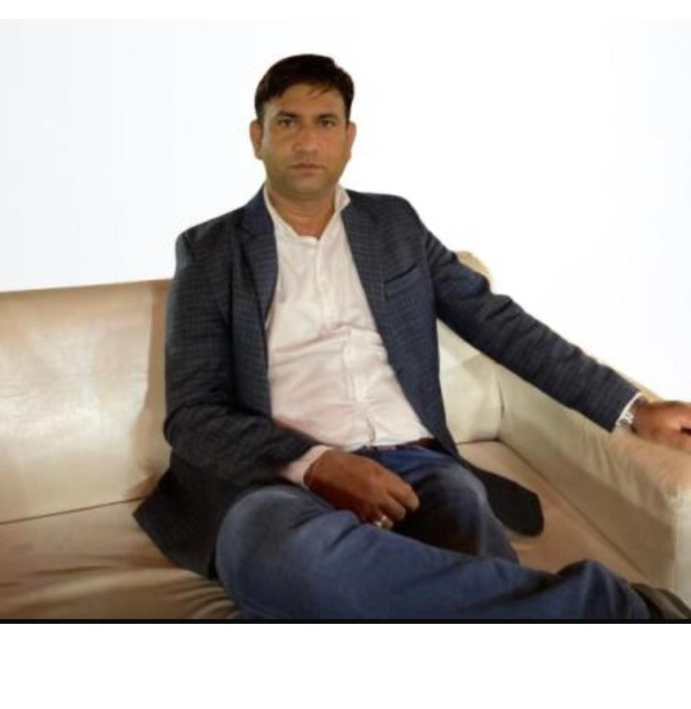

About SBB Foundation
SBB Foundation is a non-profit organization dedicated to uplifting underprivileged children by providing education and support. Books of Joy was founded in October 2015 with the mission to empower children through access to education, especially to help children in underserved communities that were affected by the massive earthquake that struck Nepal in April 2015. The earthquake had a devastating impact on the country and its education system — more than 32,000 classrooms were destroyed or damaged and approximately one million students were left without classrooms. While many organizations came together to rebuild the demolished schools, the scale of the damage meant that many needs were unmet. Books of Joy joined the effort to rebuild Nepal by working with multiple local organizations to help under-resourced and vulnerable populations regain access to education. Education is the most powerful weapon which you can use to change the world. Nelson Mandela We view education as the great equalizer. It opens doors to opportunity and changes lives. As Nelson Mandela said, “Education is the most powerful weapon which you can use to change the world.” While most societies ensure widespread access to education, there are many less fortunate places around the world where millions of children who dream of attending school simply can’t. Whether it is due to economic, social, or cultural barriers, they are left behind — at great cost to themselves, their families, and their communities. We want to change that by providing resources to build schools and libraries that will serve marginalized populations and funding programs that support students and teachers in the pursuit of learning. Please join us in unlocking the power of education for those who need it most. Stay Updated Subscribe to stay updated & get our newsletters Connect with us Follow us on social media
Meet Our Founder
Jitendra Sharma, the visionary behind SBB Foundation, is dedicated to improving the lives of underprivileged children and promoting sustainable development through innovative programs like child education and cow ranching. His leadership and compassion continue to inspire communities to grow together in harmony and hope.
Gaurav, the visionary behind SBB Foundation, is dedicated to improving the lives of underprivileged children and promoting sustainable development through innovative programs like child education and cow ranching. His leadership and compassion continue to inspire communities to grow together in harmony and hope.